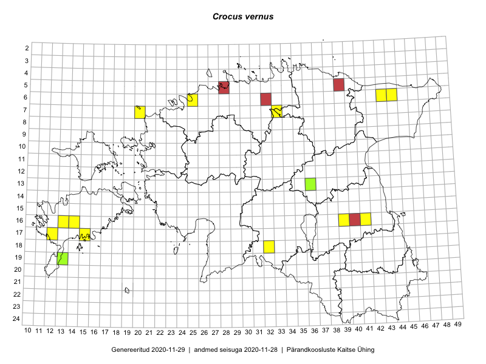

Crocus vernus
Uuendatud: 2016-12-07
Kaardile koondatud taksonid: Crocus vernus (L.) Hill

Kaart põhineb 9 vaatlusel. Taime on leitud 9 ruudust.
| Ruut | Vaatleja(d) | Vaatlusaeg | Kirje tüüp | Viide andmebaasikirjele |
|---|---|---|---|---|
| 07-33 | Jana-Maria Habicht, Ester Valdvee | 2015-05-01 | punkt | vaata PlutoFis |
| 06-25 | Jana-Maria Habicht | 2015-04-25 | punkt | vaata PlutoFis |
| 16-14 | Sirje Azarov, Aira Alasi | 2015-05-01 | punkt | vaata PlutoFis |
| 16-39 | Karin Kikas, Elle Rajandu | 2015-04-21 | ruut/ala | vaata PlutoFis |
| 16-41 | Karin Kikas, Elle Rajandu | 2015-04-23 | punkt | vaata PlutoFis |
| 06-43 | Meeli Mesipuu, Liina Oja | 2015-04-26 | punkt | vaata PlutoFis |
| 16-13 | Mari Reitalu, Triin Reitalu | 2015-04-12 | punkt | vaata PlutoFis |
| 17-12 | Mari Reitalu | 2015-04-05 | punkt | vaata PlutoFis |
| 06-44 | Meeli Mesipuu, Liina Oja | 2015-04-25 | punkt | vaata PlutoFis |